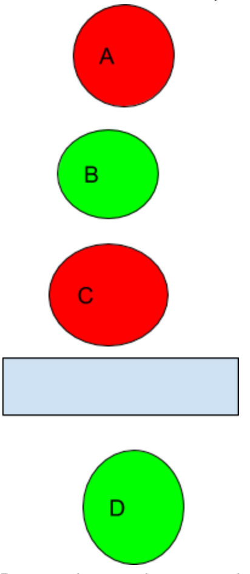
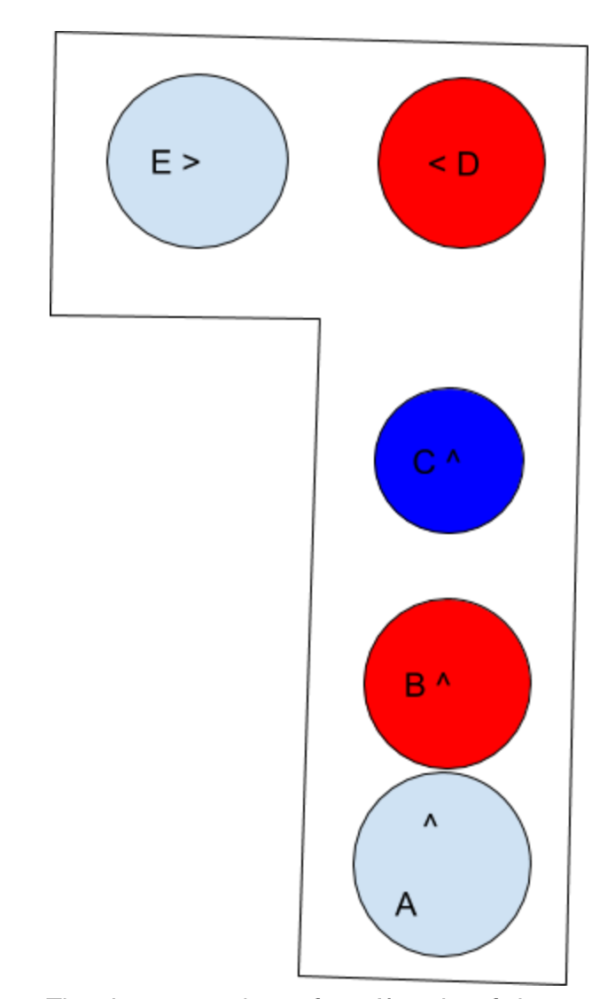
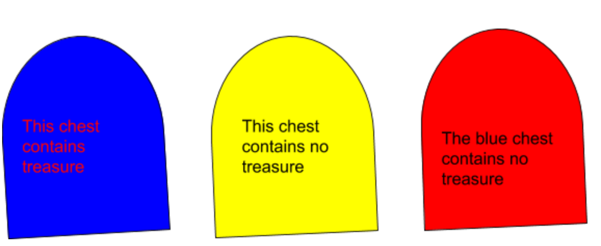
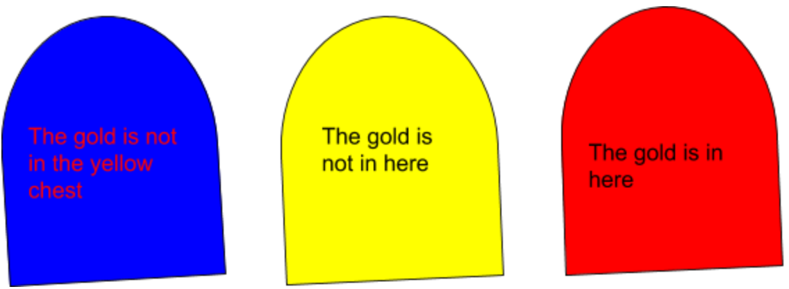
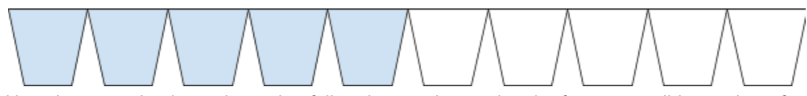
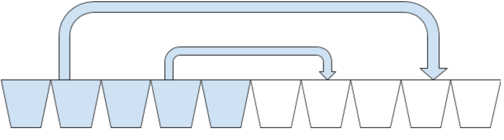

1 Four friends are crossing a bridge at night. It is very rickety, only able to support two people and they only have one torch, which everyone crossing must use. If a pair travel across, they must travel at the speed of the slower person. Alice can cross in 1 minute, Ben in 2, Charlie in 5, and Deelisa in 10. What is the fastest way for them to get over the bridge?
Berta says that Greta tells lies
Greta says that Rosa tells lies
Rosa says that Berta and Greta tell lies
Who tells the truth and who lies?
Three friends, Fred, George, and Harold are playing a game. Each person chooses someone to aim at, and rolls a die to decide whether they succeed. If they succeed, that person is out. Fred succeeds ⅓ of the time, George ⅔, and Harold all the time. Fred gets to go first, followed by George then Harold. Who should Fred aim at to win?
There are three boxes. One contains gold, one contains gold and rocks, and one contains rocks. They are labelled with these, but all the labels are wrong. You are allowed to choose one box and take one item from it, and you cannot shake or feel the boxes to tell which is which. Then, you must correctly relabel the boxes. How do you do this?
Two brothers, Harry and Owen, are mucking around in the garden. They can see each other’s faces, but not their own. Their mother tells them at least one of them has a muddy face. She asks them to stand with their backs against the wall. “Step forward if you have a muddy face” she says. Nothing happens. She repeats, “Step forward if you have a muddy face”. What happens and why?
A man went on a trip with a fox, a goose and a sack of corn. He came upon a stream which he had to cross and found a tiny boat to use to cross the stream. He could only take himself and one other - the fox, the goose, or the corn - one at a time. He could not leave the fox alone with the goose or the goose alone with the corn. How does he get all safely over the stream?
You are going into a castle. There are two doors. One leads to the treasure room and the other leads to a pit of boiling lava. There are two identical guards, one who tells the truth and one who lies. What question do you ask to get to the treasure?
Albert and Bernard just became friends with Cheryl, and they want to know when her birthday is. She gives them a list of 10 possible dates and tells Albert the month and Bernard the date.
May 15 May 16 May 19 June 17 June 18 July 14 July 16 August 14 August 15 August 17.
The following conversation happens:
Albert: I don’t know Cheryl’s birthday, but I know that Bernard does not know.
Bernard: At first I didn’t know Cheryl’s birthday, but now I know.
Albert: Now I know too.
When is Cheryl’s birthday?
Two numbers between 1 and 5 are randomly chosen. Their sum is told to Sally and their product to Peter.
The following conversation happens:
Peter: I don’t know the two numbers
Sally: Now I know the two numbers
Peter: I still don’t know the two numbers
Sally: The number I was told is larger than the number you were told.
Peter: Now I know the two numbers
What are the two numbers?
There are 7 glasses, all upside-down.Try to turn all glasses the right way up in the fewest possible number of moves, each move flipping 3 glasses.
Three cats and three mice are stuck on one side of a river. They have a boat which can carry two animals. Cats cannot outnumber mice on either side for obvious reasons. How do they get across?
Exactly none of these statements are true
Exactly one of these statements is true
Exactly two of these statements are true
Exactly three of these statements are true
Exactly four of these statements are true
Exactly five of these statements are true
Exactly six of these statements are true
Exactly seven of these statements are true
Exactly eight of these statements are true
Exactly nine of these statements are true
Exactly ten of these statements are true
Exactly eleven of these statements are true
Exactly twelve of these statements are true
Which are true?
In a small town, every man either has a beard or does not. Every man who has a beard does not shave, and every man who does not shaves or is shaved by Figaro, who is the only barber in town. Figaro shaves all who do not shave themselves. Does Figaro have a beard?
Four clowns are lined up like so.
D cannot be seen by anyone, because of the block. They are all looking towards D. All clowns know that there are two green hats and two red. Who will be first to figure out the colour of their own hat?
Five clowns are arranged like so. The arrow signifies the direction they are looking.
The clowns are shown from A’s point of view, and there are two blue and three red hats. Who will be first to announce the color of A’s hat?
At most one statement is true, and exactly one contains treasure. Which one contains treasure?
At least one statement is true and one is false. Where is the gold?
The 100 pirates on the ship The banana are very democratic. When they get some treasure, the oldest pirate proposes a way to divide the loot and everyone votes. If there is a majority or equal, the plan goes ahead, and if there is not, the pirate is thrown overboard and the next eldest tries. Recently, they have stolen 100 dubloons. What will give the eldest the most money?
There are ten glasses, five full of water and five empty as shown.
How do you make them alternating full and empty by moving the fewest possible number of glasses?
Take the second and fourth glasses and pour them into the seventh and ninth, then put them back.
Two people are sharing a cake. How can they divide it so each person thinks they have at least their fair share? Bonus: What about 3 people?